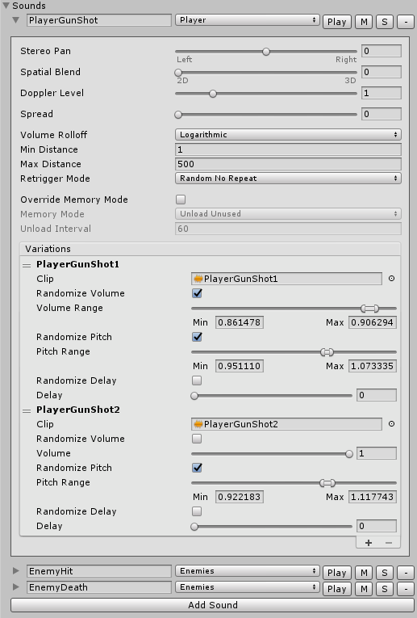

Sound
Description
A sound is a part of the sound bank. It represents a set of parameters defining how the sound will be mixed (most of them are duplicates from Audio Source). It could also have multiple audio clips serving as variations. Each sound variation can be randomized in volume, pitch and delay.

Properties
| Property | Description |
|---|---|
| Name | The name of the sound. |
| Stereo Pan | The stereo panning parameter defining sound position in a stereo way (left or right). |
| Spatial Blend | The spatial blend parameter defining how much the sound is affected by 3d spatialisation calculations (attenuation, doppler etc). |
| Doppler Level | The scale of doppler effect that will be applied to the sound (if is set to 0, then no effect is applied). |
| Spread | The spread angle (in degrees) of a 3d stereo or multichannel sound in speaker space. |
| Volume Rolloff | The attenuation mode defining how sound volume will be lowered over the distance. |
| Min Distance | The parameter defining the boundary within which the sound won't get any louder. Outside Min Distance it will begin to attenuate. |
| Max Distance | The parameter defining the boundary outside which the sound will be inaudible or stop attenuating depending on Volume Rolloff value. |
| Retrigger Mode | The rule defining how the sound will play variations. |
| (Stem Pro) Override Memory Mode | The flag indicating whether the sound should use its own memory management mode and unload interval. |
| (Stem Pro) Memory Mode | The mode defining how audio clips will be managed in memory. |
| (Stem Pro) Unload Interval | The interval after which audio clips will be unloaded from memory. |
Stereo Pan, Spatial Blend, Doppler Level, Spread, Min Distance, Max Distance parameters duplicate corresponding parameters from Audio Source. Please refer to Unity Manual for details.
Variation Properties
| Property | Description |
|---|---|
| Clip | The reference to AudioClip. Please refer to Unity Manual for details. |
| Randomize Volume | The flag indicating whether the sound variation should be randomized in volume. |
| Volume / Volume Range | The volume of the sound variation. Depending on Randomize Volume flag it's either a set value or a random value from the range. |
| Randomize Pitch | The flag indicating whether the sound variation should be randomized in pitch. |
| Pitch / Pitch Range | Amount of change in pitch due to slowdown/speed up of the AudioClip. Depending on Randomize Pitch flag it's either a set value or a random value from the range. |
| Randomize Delay | The flag indicating whether the sound variation should be randomized in delay. |
| Delay / Delay Range | The playback delay in seconds. Depending on Randomize Delay flag it's either a set value or a random value from the range. |